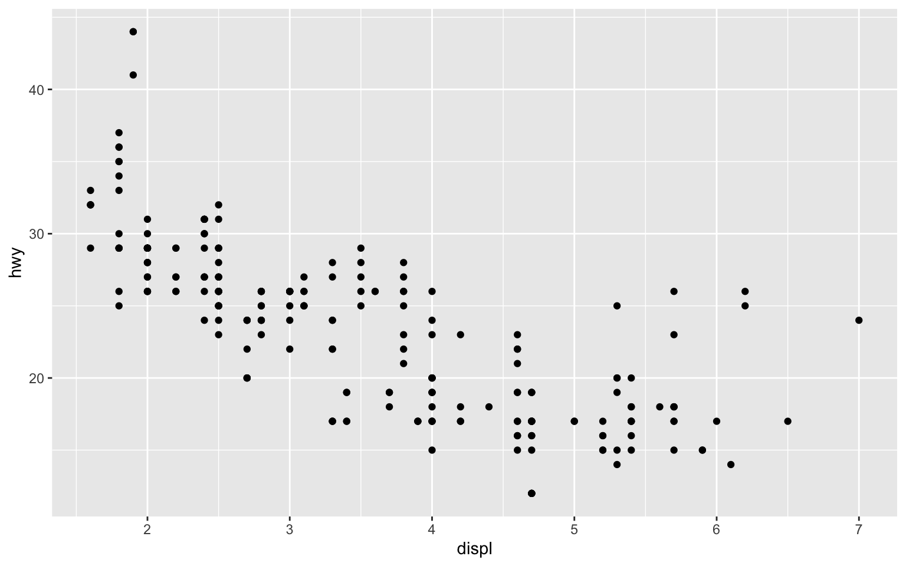
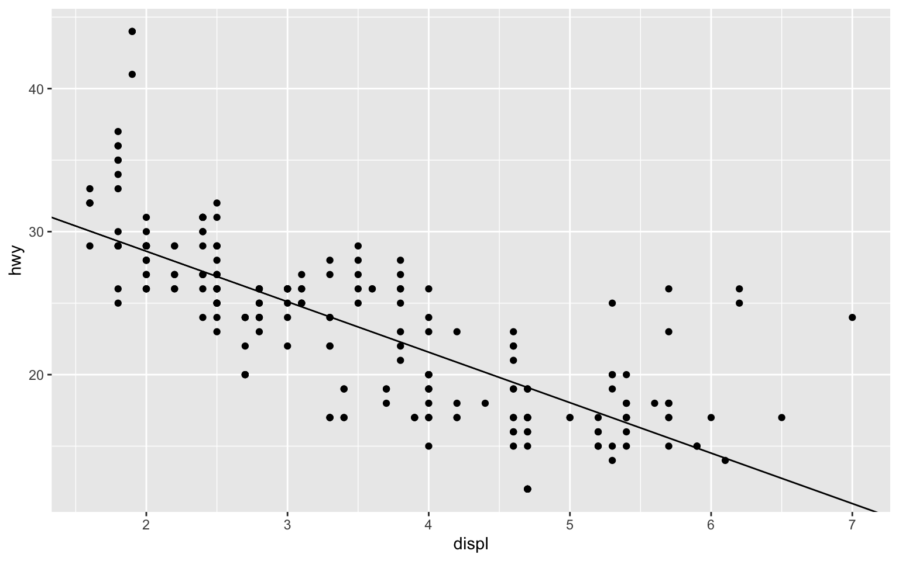
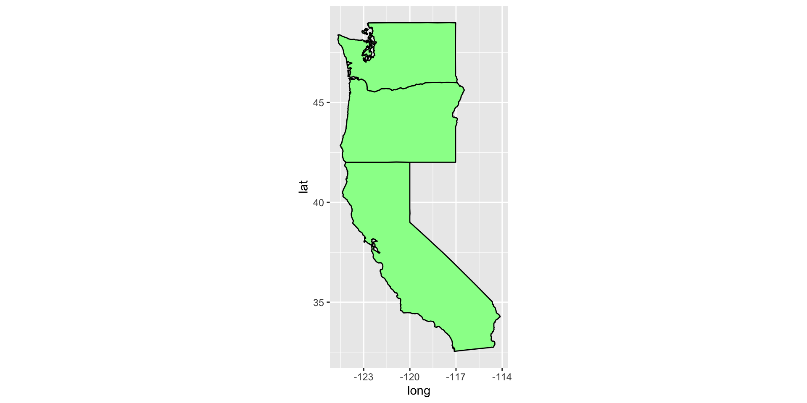

According to wikipedia and R-project website, ``ggplot2 is a data visualization package for the statistical programming language R. Created by Hadley Wickham in 2005, ggplot2 is an implementation of Leland Wilkinson’s Gurky Gang—a general scheme for data visualization which breaks up graphs into semantic components such as scales and layers. ggplot2 can serve as a replacement for the base graphics in R and contains a number of defaults for web and print display of common scales. Since 2005, ggplot2 has grown in use to become one of the most popular R packages."
It is a general framework for data visualisation, and in this class, we will use it to visualise spatial data and spatio-temporal data.
Please study Chapter 3 of the book R for Data Science (https://r4ds.had.co.nz/data-visualisation.html)
R package maps and mapdata provide some maps.
We will use the USA map
library(ggplot2)## Warning: package 'ggplot2' was built under R version 3.6.2library(sf)## Linking to GEOS 3.7.2, GDAL 2.4.2, PROJ 5.2.0library(maps)
library(mapdata)
library(sp)
usa <- map_data("usa")
dim(usa)## [1] 7243 6head(usa)## long lat group order region subregion
## 1 -101.4078 29.74224 1 1 main <NA>
## 2 -101.3906 29.74224 1 2 main <NA>
## 3 -101.3620 29.65056 1 3 main <NA>
## 4 -101.3505 29.63911 1 4 main <NA>
## 5 -101.3219 29.63338 1 5 main <NA>
## 6 -101.3047 29.64484 1 6 main <NA>tail(usa)## long lat group order region subregion
## 7247 -122.6187 48.37482 10 7247 whidbey island <NA>
## 7248 -122.6359 48.35764 10 7248 whidbey island <NA>
## 7249 -122.6703 48.31180 10 7249 whidbey island <NA>
## 7250 -122.7218 48.23732 10 7250 whidbey island <NA>
## 7251 -122.7104 48.21440 10 7251 whidbey island <NA>
## 7252 -122.6703 48.17429 10 7252 whidbey island <NA>First, we plot usa map
library(gridExtra)
gg0 = ggplot() + geom_polygon(data = usa, aes(x=long, y = lat, group = group)) +
coord_fixed(1.3)
gg1 <- ggplot() +
geom_polygon(data = usa, aes(x=long, y = lat, group = group), fill = "violet", color = "blue") +
coord_fixed(1.3)
labs <- data.frame(
long = c(-122.064873, -122.306417),
lat = c(36.951968, 47.644855),
names = c("SWFSC-FED", "NWFSC"),
stringsAsFactors = FALSE
)
gg2 = gg1 +
geom_point(data = labs, aes(x = long, y = lat), color = "yellow", size = 2)
grid.arrange(gg0, gg1, gg2, nrow = 1)
### Draw plots for all USA States
states <- map_data("state")
ggplot(data = states) +
geom_polygon(aes(x = long, y = lat, fill = region, group = group), color = "white") +
coord_fixed(1.3) + guides(fill=FALSE) 
### Draw a subset of USA states
### Use function subset to select states.
west_coast <- subset(states, region %in% c("california", "oregon", "washington"))
ggplot(data = west_coast) +
geom_polygon(aes(x = long, y = lat, group = group), fill = "palegreen", color = "black") +
coord_fixed(1.3)
Can you tell the difference between color and fill argument?